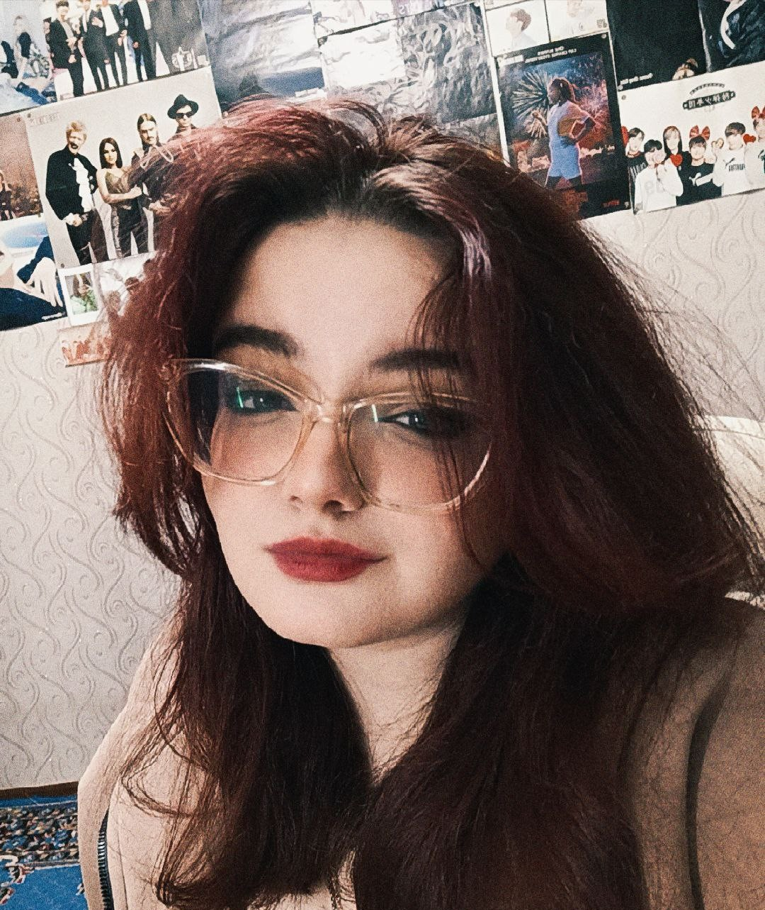

Будущий Ai разработчик
Привет! Меня зовут Мария. Я студентка факультета "Автоматизированных информационных систем", образовательная программа - 09.03.01 "Информатика и вычислительная техника". Активно изучаю языки интернет-программирования. Увлекаюсь созданием удобных и красивых интерфейсов. В свободное время читаю художественную литературу и играю в различные игры.

Моё фото
Мои любимые справочники для веб-разработки:
Каждый из этих ресурсов помогает мне становиться лучше в программировании.